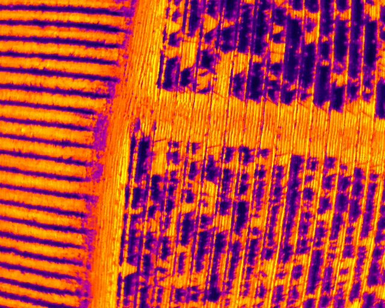
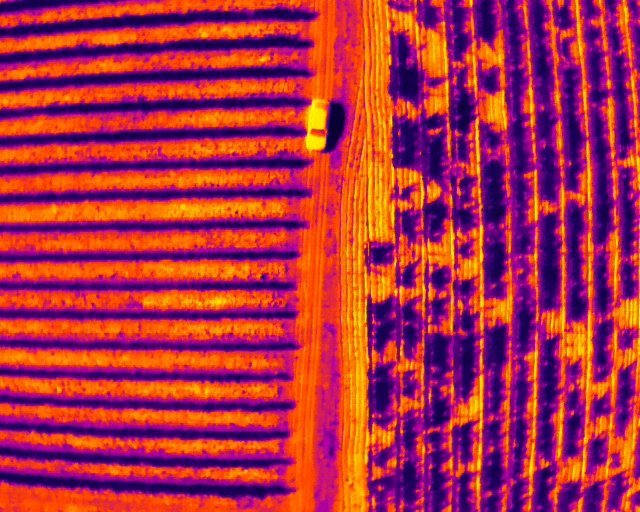
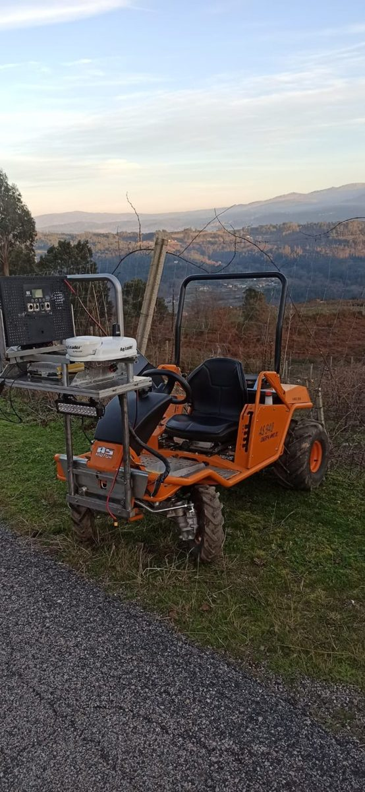
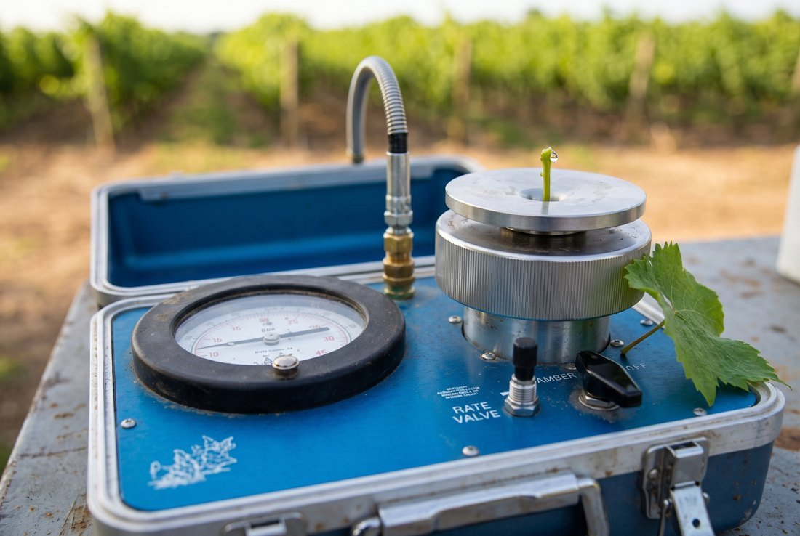
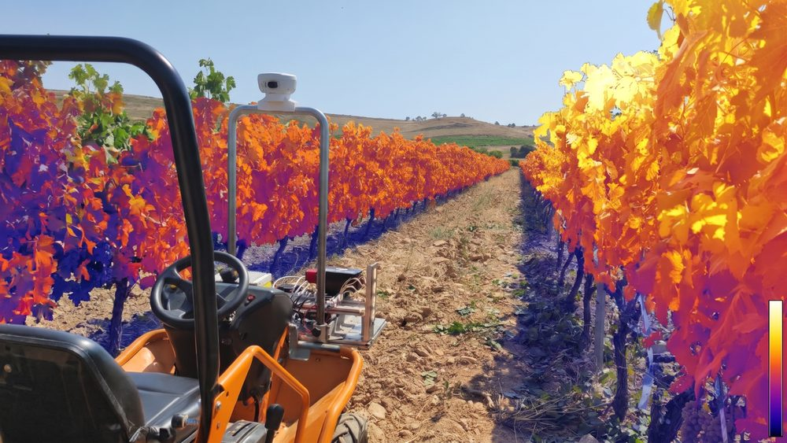

¿Qué cepa tiene sed?
Las plantas también sufren sequía. Una cámara térmica ve lo que el ojo no nota.
El problema
El estado hídrico de la vid afecta al rendimiento y a la calidad de la uva, y el riego es clave para un viñedo sostenible. Medirlo suele requerir una cámara de presión y mucho trabajo planta a planta.
Lo que dice la investigación
Cámaras térmicas montadas en un vehículo que avanza a 5 km/h estiman la sed de la vid con aprendizaje automático. En un trabajo, los modelos alcanzaron valores de R² de hasta 0,62 en validación cruzada y 0,65 en predicción (Gutiérrez et al., 2018b). En otro, dos índices térmicos llegaron a R² de hasta 0,71 frente a la medida de referencia (Gutiérrez et al., 2021).





Así será el juego
Te mostraremos imágenes térmicas y tendrás que decir qué zona sufre más estrés.
Para saber más
- Gutiérrez, S., Diago, M. P., Fernández-Novales, J. y Tardaguila, J. (2018b). Vineyard water status assessment using on-the-go thermal imaging and machine learning. PLoS ONE, 13(2), e0192037. doi:10.1371/journal.pone.0192037
- Gutiérrez, S., Fernández-Novales, J., Diago, M. P., Íñiguez, R. y Tardaguila, J. (2021). Assessing and mapping vineyard water status using a ground mobile thermal imaging platform. Irrigation Science. doi:10.1007/s00271-021-00735-1